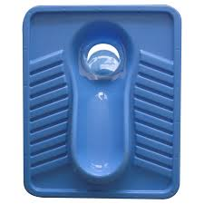
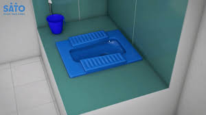
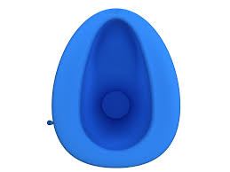
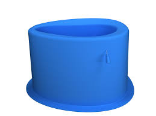

Introducing the SATO Smart Squat Pan with Auto-Opening & Closing Lid.
This squat pan is perfect for modern households and facilities
looking for a clean, efficient
and long-lasting sanitation solution.
It is Affordable, Durable, and Designed for Better Hygiene.




🌟 Features That Make a Difference
✅ Ergonomic Squat Design
Promotes a natural posture for healthier and more efficient bowel movements.
Designed with sturdy, slip-resistant contours to ensure user comfort and safety.
🔄 Smart Auto-Opening & Closing Lid
Motion-Activated Convenience: The lid opens on a light load and deposits the load then closes again.
Soft-Close: The lid closes softly preventing slamming thus ensures peace during use.
🧼 Hygienic & Easy to Maintain
Water-Saving Design: Engineered for low water consumption without compromising performance.
Easy-to-clean materials ensure long-term cleanliness with minimal effort.
📦 Why Choose SATO?
- Affordable Innovation: High-quality, functional designs at budget-friendly prices.
- Easy Installation: SATO products are designed for quick and seamless setup.
- Aligns your body naturally for efficient and strain-free elimination.